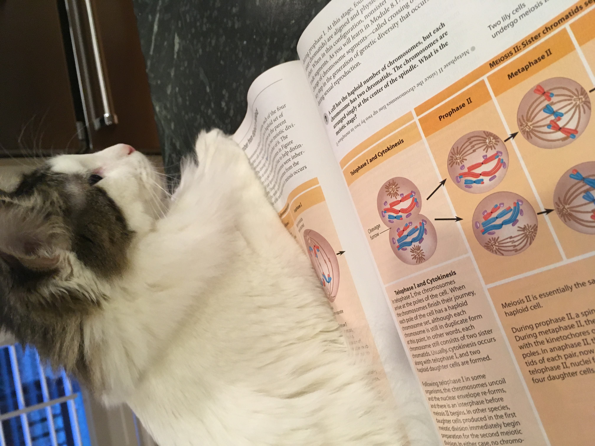
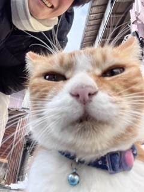

Tuna

Tuna isn't just any cat – they're a bundle of furry joy with a personality as unique as their name. With their sleek coat resembling the deep blue sea, Tuna is a true beauty to behold. Their eyes, like shimmering gems, reflect the curiosity and affection that they're ready to share with a loving family.
Playtime is Tuna's specialty! Whether it's chasing feather toys, mastering acrobatics with a ball of yarn, or simply exploring the ins and outs of their surroundings, Tuna's enthusiasm is contagious. They'll keep you entertained for hours on end, turning every moment into a delightful adventure.
But Tuna also has a softer side – a side that craves quiet evenings nestled on your lap, purring contentedly as you stroke their velvety fur. Their gentle nature is a reminder that in their heart of hearts, Tuna longs for a forever home where they can shower their human companions with unconditional love.
Photo Gallery


Likes
- Playing with her brother, Tako
- Being a gremlin
- Eating treats and being chunky
Luke

Luke is a white cat with long hair and brown spots.
Luke is a six-year-old white cat; he is very energetic and likes to play fetch. Luke has one brother named Jesse. Luke’s favorite thing to eat are chicken cat treats.
Luke is very badly behaved. He often jumps up on furniture and drinks out of people’s water glasses. He also steals people’s jewelry and hides it in his bed. Luke knows several commands; he can sit, jump, follow, play fetch, and give people his paw.
Photo gallery



Likes
- Luke likes salmon.
- Luke likes to play fetch with hair ties.
- Luke likes to sleep in laundry baskets.
Fluffy

Fluffy, the endearing feline personality, graced the world with her presence in the spring of 2015. From the very beginning, it was evident that she was no ordinary cat. With a coat that seemed to defy gravity, Fluffy's fur was a mesmerizing swirl of snowy white and soft silver, reminiscent of freshly fallen snow on a moonlit night. Her striking appearance earned her the nickname "Snowflake" among admirers, and her fur, as ethereal as it was, concealed a heart as warm as the sun.
Despite her regal appearance, Fluffy was a down-to-earth cat, always eager to engage in playful antics or offer a comforting purr to anyone in need. She had an uncanny ability to bring smiles to even the most solemn faces with her charming and mischievous nature. Fluffy's life was a tapestry of adventures, from daring leaps onto towering bookshelves to serene sunbathing sessions by the window. Her playful spirit and boundless curiosity made her an integral part of her human family, leaving an indelible mark on their hearts. Fluffy's biography is not just a tale of a fluffy cat but a story of love, laughter, and the enduring bond between a cat and her human companions.
Photo Gallery


Likes
- running away
- sunbathing on the grass
- eating treats
Moon

Moon is not your ordinary kitty; he's a celestial adventurer with a passion for the great outdoors. With his sleek, white fur that shimmers like the night sky, Moon is a striking figure as he embarks on his daily outdoor escapades. Whether it's chasing leaves, pouncing on shadows, or simply basking in the warmth of the sun, Moon's love for the natural world knows no bounds. His curiosity knows no limits, and he's always ready to explore new horizons, just like a true astronaut exploring the moon.
But Moon's heart truly belongs to his sister, with whom he shares an unbreakable bond. When they're not conquering the wilderness together, you can find Moon engaged in playful shenanigans with his sister. Their synchronized pounces, graceful leaps, and playful tumbles are a sight to behold, a testament to the deep connection they share.
Photo Gallery


Likes
- playing with star
- sunbathing on the grass
- being a menace
Bacon Q Dog

Bacon Q. Dog is a 9yr old labradoodle. He prefers to spend his days lounging among the three different beds/couches that his family has gifted him. He enjoys a walk or two around the neighborhood, as long as he can pretend that he doesn't see any of the other animals to avoid the embarrassment of not wanting to admit he has no wolf-like skills in chasing them.
At night just as the rest of the family is ready to relax, Bacon suddenly wants to release all of his energy. He will place his toys on a mini couch and frantically drag the couch around, giving his toys "a ride." There is also a lot of rolling. Lots and lots of rolling.
Photo Gallery


Likes
- Belly rubs
- Playing tug-of-war
- Sneaking onto the couch
Pappy

Pappy is a 7 year old morkie. Most days he prefers to spend it laying around the house in his various favorite spots. Most of the time you can find him lying in his bed. He loves going with walks, but still hasn’t figured out how to approach other dogs without scaring them off. He loves his family and loves to keep intruders away even for his size.
He also enjoys playing with his favorite basketball. He loves pushing it around, scratching it, or even talking with it. He also loves his little stuffed animal too. Pappy also loves to be scratched and will ask you to keep scratching until he is happy.
Photo Gallery


Likes
- Taking naps with his paws in the air
- Getting scratches or belly rubs
- Any kind of dog treats
Star
Star's greatest joy is sharing her adventures with her beloved brother, Moon. Together, they make an inseparable duo, embarking on countless escapades that keep them both entertained for hours on end. Their playful antics are a heartwarming testament to the unbreakable bond between siblings.
When the sun sets and the day's adventures come to a close, Star transforms into a cuddle aficionado. She enjoys snuggling up with her human companions, purring contentedly as she revels in the warmth of their affection.
Photo Gallery
Likes
- Chasing mice
- Getting scratches or belly rubs
- jumping on the bed